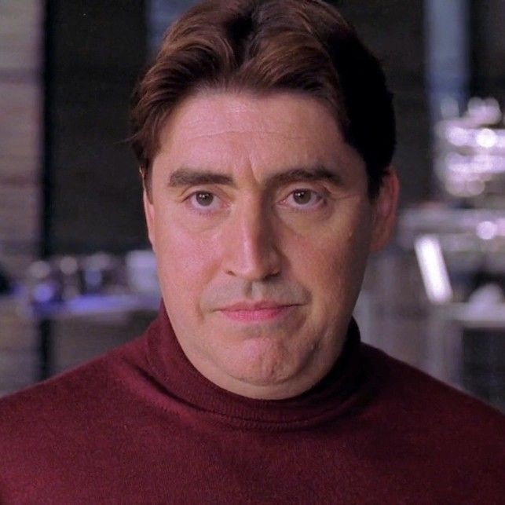

Elenco Principal




Considerado por muitos como o melhor filme do Homem-Aranha, "Homem-Aranha 2" (2004) aprofunda a jornada de Peter Parker enquanto ele enfrenta novos desafios pessoais e o formidável Doutor Octopus. Dirigido por Sam Raimi, o filme equilibra perfeitamente drama humano e ação espetacular.
Dois anos após os eventos do primeiro filme, Peter Parker (Tobey Maguire) enfrenta uma crise existencial. Ele está lutando para equilibrar sua vida dupla como estudante universitário e super-herói, enquanto seu relacionamento com Mary Jane Watson (Kirsten Dunst) se torna cada vez mais complicado.
Para piorar a situação, Peter começa a perder seus poderes de forma intermitente, refletindo sua crise de identidade e dúvidas sobre continuar sendo o Homem-Aranha.
Enquanto isso, o brilhante cientista Dr. Otto Octavius (Alfred Molina) realiza um experimento com fusão nuclear que dá terrivelmente errado, fundindo quatro tentáculos mecânicos inteligentes ao seu corpo e transformando-o no perigoso Doutor Octopus.
Peter deve recuperar sua confiança e aceitar suas responsabilidades como herói para enfrentar essa nova ameaça e salvar Nova York da destruição.


"Homem-Aranha 2" recebeu aclamação universal da crítica e é frequentemente citado como um dos melhores filmes de super-heróis já feitos.
Alfred Molina passou por mais de 4 horas de maquiagem diariamente para se transformar no Doutor Octopus, com tentáculos mecânicos operados por puppeteers.
A sequência do trem levou meses para ser planejada e filmada, utilizando uma combinação de efeitos práticos e CGI para criar uma das cenas de ação mais memoráveis do cinema.
Danny Elfman retornou para compor a trilha sonora, criando temas memoráveis para o Doutor Octopus que se tornaram icônicos.